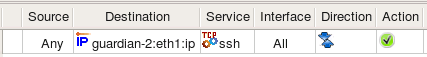
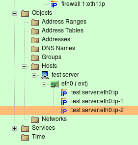
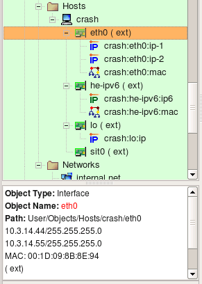
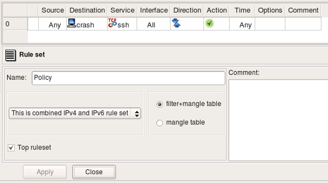
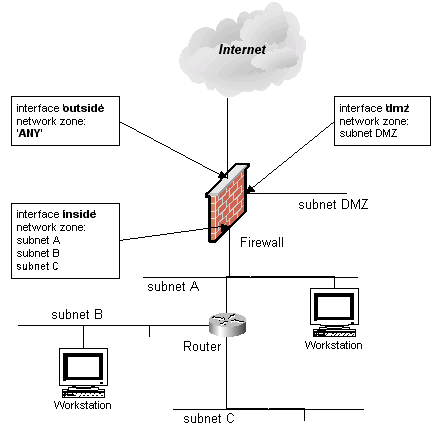
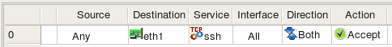
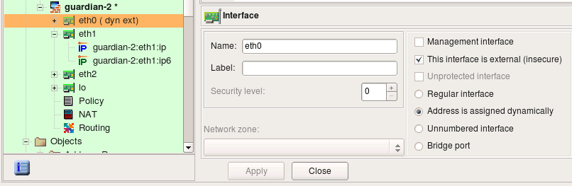

Firewall Builder supports variety of object types, both simple such as address, network, host, or IP, TCP, UDP and ICMP services, as well as more sophisticated such as Firewall, Host, Address table, DNS name, User service. In this article, we examine object types that represent addresses or groups of addresses.
All objects in Firewall Builder have some characteristics in common. All objects have a Name field and a Comment field. The Name field can contain white spaces and can be arbitrarily long (though shorter names work better in the GUI). The Comment field can contain any text of any length.
Objects that contain IP address fields provide validity checking for the address when the object is saved. Invalid IP addresses produce an error.
The regular address object describes single IPv4 address. It can be a child of an interface object, in which case it represents its IP address and netmask, or it can be used as a standalone object. In the latter case it does not have netmask and is located in the Objects/Addresses branch of the objects tree.
In this case this object is located directly under the interface object. This could be interface of a Host or a Firewall object. To create this kind of an Address, use context menu associated with the Interface (right mouse click on the Interface object in the tree to open the menu).
Its dialog provides the following entry fields:
Note: A typical error is to interpret this object as an address of the subnet to which the interface of the host or flrewall belongs. This object represents an address of the interface, not a network address. (So, 192.168.1.1, not 192.168.1.0)
Consider rule as shown on the screenshot below where we use IPv4 address shown on the screenshot above (remember, it belongs to the interface):
In case of iptables Firewall Builder generates the following command from this rule:
$IPTABLES -A INPUT -p tcp -m tcp -d 172.16.22.1 --dport 22 -m state --state NEW -j ACCEPT
Note how even though the Address object has a netmask, generated command matches its address as a host address. This is because the netmask is only used to describe subnet the interface is connected to. When this address object is used in a rule, it is understood that the intention is to match the address of the interface it belongs to rather than any address on the subnet. Use Network object if you need to match whole subnet.
This iptables rule was placed in the INPUT chain because object in the "Destination" was an address of an interface of the firewall. While processing the policy for the iptables target firewall platform, Firewall Builder compares addresses in source and destination of a rule to the addresses of all interfaces of the firewall to find rules that control access to and from the firewall and places them into INPUT or OUTPUT chains. This is only necessary for iptables.
In this case this object is located in the Objects / Addresses part of the objects tree and does not have netmask entry field. To create this kind of an Address, use main New Object menu item New Address or context menu associated with the Addresses folder in the tree (right mouse click on the Interface object in the tree to open the menu).
Dialog fields Name, Address and Comment have the same purpose and properties as in the case of the Address object used to describe an addresses of an interface.
DNS Lookup button can be used to automatically populate the address field using DNS query. The program runs DNS query for the "A" record with the name of the Address object. The name does not have to match any DNS record if you never plan to use this feature and can populate the address manually. DNS query function is just a convenience, but to use it, the name of the object must match DNS record.
The IPv6 address object is similar to the IPv4 address object. Just like IPv4 address, it can be used both as a child of an interface object or as stand-alone.
If it is used to describe IPv6 address of an interface, it has a netmask represented as bit length. Unlike with IPv4 address object, netmask of IPv6 is never represented as full colon-separated string of octets.
In this case this object is located in the Objects / Addresses part of the objects tree (the same place where stand-alone IPv4 addresses are located) and does not have netmask entry field. To create this kind of an Address, use main New Object menu item New Address IPv6 or context menu associated with the Addresses folder in the tree (right mouse click on the Interface object in the tree to open the menu).
Policy compilers treat IPv6 addresses in policy rules according to the same algorithms as those for IPv4 rules. For example, just like with IPv4, compiler for iptables checks if address matches address of any interface of the firewall to determine if the rule should be placed in INPUT or OUTPUT chain.
Consider rule as shown on the screenshot below where we use two IPv6 address objects. One object belongs to the interface inside of the firewall while another is IPv6 address of the project's web site.
For iptables, Firewall Builder generates the following commands from this rule:
$IP6TABLES -A INPUT -p tcp -m tcp -d fe80::21d:9ff:fe8b:8e94 --dport 80 -m state --state NEW -j ACCEPT
$IP6TABLES -A FORWARD -p tcp -m tcp -d 2001:470:1f0e:162::2 --dport 80 -m state --state NEW -j ACCEPT
The rule that matches address described by object guardian-2:eth1:ipv6 went to the INPUT chain because compiler detected that this rule matches packets that are headed for the firewall itself, which iptables inspects in the INPUT chain. Rule that matches address described by the object ipv6.fwbuilder.org went to the FORWARD chain because these packets go through the firewall.
The Physical Address object describes the hardware or media address. For Ethernet this would be the MAC address of the interface. Currently only Ethernet MAC addresses are supported but support for other kinds may be added in the future. Physical Address object can only be a child of an interfaces, it can not exist as a stand-alone object. To create this kind of address object, use context menu associated with the interface object, item "Add MAC Address". Only one Physical Address object is allowed per interface, the program enforces this restriction. If you create Firewall or Host object using SNMP discovery, all interfaces will be automatically populated with their MAC addresses.
Only a few flrewall platforms really support physical address flltering. Currently Netfllter/iptables is the only flrewall platform that can do it and is supported by Firewall Builder.
if the Interface object that has multiple Address and Physical Address child objects is used in the policy or the NAT rule element (either Source or Destination), then the policy compiler tries to generate a rule using all of them. Compiler actually does this by generating multiple rules using each address in turn. This roughly corresponds to using logical operation "OR" on these addresses: if our interface had two addresses Address1 and Address2, then the generated rule would match if address in the packet is either Address1 OR Address2. The case of a Physical Address is different though. If the Interface has a physical address, then compiler tries to build a set of rules that matches on combination of each IP address and its MAC address. The reason for this change is as follows:
Suppose we have a very important host on the network. We create a Host object, then add an interface to it. The interface should have both Address and Physical Address objects as shown on the following screenshot (these two child objects are visible in the tree under the Interface eth0):
Note how checkbox "MAC matching" in the Host object dialog is checked, this makes compiler use MAC addresses of the interfaces of this host.
Because this is a very important host, we would like to be sure that packets whose source IP is that of this host are really coming from it and are not spoofed. The best way to achieve this goal is to use strong authentication, for example with IPSEC protocol. Using IPSEC is outside the scope of this document though; our goal right now is to show that inspecting MAC address of the packet can improve security.
Both the real packet originated from this host and a spoofed packet have a source IP address of the interface of this host, but a source MAC address is going to be different if spooflng is going on. We can use this to catch and drop spoofed packets. Here are three possible ways to build security policy in this situation:
Using only Address object in the rule element. This means the flrewall inspects only IP address and ignores the MAC address of the packets.
Firewall Builder generates the following simple iptables command for this rule:
$IPTABLES -A FORWARD -s 10.3.14.44 -m state --state NEW -j ACCEPT
Using only Physical Address object. A rule built this way permits all kinds of trafflc coming from the trusted host even if its IP address changes.
For this rule, the following iptables command is generated:
$IPTABLES -A FORWARD -m mac --mac-source 00:1D:09:8B:8E:94 -m state --state NEW -j ACCEPT
Using Host or Interface object. This way we end up with a rule that matches on a combination of the IP address and MAC address. This may be used as a sophisticated anti-spooflng rule.
For this rule, the following iptables command is generated:
$IPTABLES -A FORWARD -m mac --mac-source 00:1D:09:8B:8E:94 -s 10.3.14.44 -m state --state NEW -j ACCEPT
Using Address and Physical Address objects in a rule is not the same as using a Host or Interface object to which these Address and Physical Address belong. Here is what happens if we put objects representing IP address and MAC address in the rule:
For this rule, the following iptables command is generated:
$IPTABLES -A FORWARD -s 10.3.14.44 -m state --state NEW -j ACCEPT
$IPTABLES -A FORWARD -m mac --mac-source 00:1D:09:8B:8E:94 -m state --state NEW -j ACCEPT
Using multiple objects in the rule element is like bundling them together using logical operation OR. If put Address and Physical Address in the rule like in the screenshot above, we end up with policy matching packets that have the source address 10.3.14.44 or MAC address 00:1D:09:8B:8E:94, but not necessarily both at the same time. Any host that manages to pretend to have the IP address 10.3.14.44 would be able to send packets through our flrewall even if its MAC address is different. To achieve our goal and make sure packets with the source IP 10.3.14.44 really belong to our important host, we should be checking its IP address and MAC address at the same time and let a packet through only if its IP address AND MAC address are what we expect them to be. That is why Firewall Builder treats physical addresses differently and generates flrewall code that inspects both IP address and physical address.
Firewall Builder generates flrewall code to inspect MAC address only for Host objects with the option "MAC address flltering" turned on. If this option is off, the Physical Address object will be ignored even if it is present in the Host object’s Interface. This is because Host objects created using the Network Discovery Druid are populated with both IP address and MAC address information which is available through SNMP query, but inspection of MAC addresses is rarely needed. You can use the MAC address flltering option in the Host object to specify that you want the MAC address to be verifled for the host.
Target firewall imposes certain restrictions on the ruels matching MAC address, for example only source MAC address can be matched. Firewall Builder is aware of these restrictions, policy compiler will issue an error if Physical Address object is used in a rule that would lead to an impossible iptables command.
The host object in Firewall Builder is designed to represent real hosts in the network: workstations, servers, and any other network node with an address. Just like real hosts, the host objects have interfaces, representing different physical connections to the network. Most Internet hosts will have just a single (visible) interface with a single IP address. In that case the actual interface and its name do not matter. For most foreign hosts, Firewall Builder will assign an arbitrary name “interface1” to the hosts interface. By using a tree-like hierarchy of hosts -> interfaces -> addresses it is possible however to specify the exact address and/or interface of a host in the case when it does matter. Both interfaces and addresses are represented by objects, which are organized in a tree. Interface objects sit in the tree directly under the host, and the address objects are located under their interfaces. The interface object can have either one or multiple addresses. An example of a host with one interface with multiple addresses are shown in the screenshot below. Host “test server” has three virtual IP addresses that all belong to the same interface “eth0”.
Note that in Firewall Builder, the host object is an abstraction. It does not have to conform to an individual host. This host object may in fact represent a web farm that accepts connections on three IP addresses, each on a different computer.
Note: The host object cannot have any access, NAT or routing policy associated with it; only firewall objects can have policies.

To speed up the process and make it simpler, creating a new host object is aided by the wizard which collects all data needed for both the host and its interfaces and then creates the object. The screenshot above represents the first page of the wizard.
Enter the host name. Generally, this name does not have to be the same as the real host’s name. However, if you are going to use SNMP to populate the host’s interfaces, or if you are going to use DNS to look up interface IP addresses, the name does have to match.
You can create a new host from a template by checking corresponding checkbox on the first page of the wizard, or you can do it manually. Lets look at the manual process. To do this, click "Next" button to switch to the page where you can enter interfates and their addresses.

If the new host object has a single interface (this, perhaps, is the most common case) then you just need to fill the entry field for its address and maybe MAC address and click Next. If the object’s name is the same as the real host name, then you can use the DNS Lookup button to get the address from DNS.
Here you can add interfaces to the new host object. Enter the interface name, address, and netmask in the appropriate fields, then click "Add" to add it to the list. (If the interface is dynamic or unnumbered, then click the appropriate checkbox instead of entering address information.) The "Update" button updates information for the interface that is selected in the list, and the "Delete" button deletes the currently selected interface.
This method only works for IPv4 addresses. If you need to add an IPv6 address, save the host object without the IPv6 address, then add the IPv6 address to the interface.
Note: You can always add, modify and remove interfaces of the new host object later using controls provided by the main window and the object tree view.

The Host object dialog allows you to edit the following parameters:
When Host object is used in a rule, it acts as a group of all of its addresses, that is, adresses that belong to all of its interfaces. The only exception is loopback interface; compilers skip its address when they replace Host object with its addresses.
Consider the following Host object. It has interface eth0 with two IP addresses and a MAC address, interface he-ipv6 with IPv6 address and a MAC address, interface lo (loopback) with its own IP address and interface sit0 (tunnel) with no address.
Lets put this host object in a rule as follows:
The rule set is configured as "IPv4 only", so even though interface he-ipv6 has IPv6 address, fwbuilder will ignore it while generating iptables commands for this rule. Interface eth0 has two IPv4 addresses and both will be used. Here are iptables commands generated for this rule:
$IPTABLES -A FORWARD -p tcp -m tcp --dport 22 -m state --state NEW -j Cid6066X5981.1
$IPTABLES -A Cid6066X5981.1 -d 10.3.14.44 -j ACCEPT
$IPTABLES -A Cid6066X5981.1 -d 10.3.14.55 -j ACCEPT
$IPTABLES -A Cid6066X5981.1 -d -j ACCEPT
Lets see what we get for the same rule if we configure rule set object as "IPv4+IPv6":
Since rule is now configured to compile for both address families, fwbuilder processes it twice, using on each pass only those addresses of the host that match address family. Here is what we get (these are relevant fragments of the generated script):
# ================ IPv4
$IPTABLES -A FORWARD -p tcp -m tcp --dport 22 -m state --state NEW -j Cid6066X5981.1
$IPTABLES -A Cid6066X5981.1 -d 10.3.14.44 -j ACCEPT
$IPTABLES -A Cid6066X5981.1 -d 10.3.14.55 -j ACCEPT
$IPTABLES -A Cid6066X5981.1 -d -j ACCEPT
# ================ IPv6
$IP6TABLES -A FORWARD -p tcp -m tcp --dport 22 -m state --state NEW -j Cid6066X5981.1
$IP6TABLES -A Cid6066X5981.1 -d fe80::a3:e2c -j ACCEPT
Interface objects belong to firewall or host objects. Interface objects cannot exist alone. The dialog for the interface object that belongs to the firewall or host provides controls for the parameters described here.
Consider the network layout shown in the following screenshot.
Here the firewall has three interfaces: ’outside’, ’dmz’, and ’inside’. Behind the firewall there is a router which in turn is connected to three subnets ’subnet A’, ’subnet B’, and ’subnet C’. Subnet A is shared between the router and the firewall (each device has an interface on this subnet). Let’s also suppose that we have created Network Objects for each subnet and called them ’subnet DMZ’, ’subnet A’, ’subnet B’ and ’subnet C’ (remember, spaces are allowed in object names). For this setup, network zones should be configured as follows:
| Interface | Network Zone |
|---|---|
| outside | ANY |
| dmz | subnet DMZ |
| inside | subnet A, subnet B, subnet C |
Since the network zone for the ’inside’ interface consists of multiple objects, a group must be created so that you could use this group as a Network Zone object.
The following explains the differences in the way firewall platforms interpret values in the Security Level and Network Zone parameters of the firewall interfaces.
| Firewall Platform | Security Level Values | Network Zone |
|---|---|---|
| iptables | two values: ’External’ or ’Internal’ | N/A |
| ipfilter | two values: ’External’ or ’Internal’ | N/A |
| pf | two values: ’External’ or ’Internal’ | N/A |
| Cisco PIX | numeric, 0 - 100 | a reference to a group or network object |
Note that "external" interface option may be deprecated in the future versions of the program
In PIX, access lists must always be attached to interfaces. Policy compiler for PIX uses information about network zones of interfaces to decide which interface a rule should be associated with if its "interface" column does not specify one (is left set to "All"). Instead of placing this rule in access lists attached to all interfaces, it compares addresses in "source" and "destination" of the rule with network zones of interfaces and uses only interfaces that match. This helps generate PIX configuration that is more compact.
Policy rules in Firewall Builder have special rule element or column called "Interface". You can drag and drop, or copy/paste interface object into this column of a rule to make the firewall match not only source and destination address and service, but also interface of the firewall through which packets enter or exit it. The direction is defined by the setting in the column "Direction". Consider the following example:
Rule #0 is "anti-spoofing" rule which relies on the ability to define interface and direction. It matches packets with source addresses equal to the addresses of the firewall's interfaces or internal network. This packets are coming in from outside, which is determined by comparing the interface through which they enter the firewall. Packets with addresses like these can not normally come from outside, and so if they do, they must be spoofed and should be dropped. This is what this rule does, it drops and logs these packets. Rule #1 permits connections originating from the internal network going out, but it makes sure these packets enter the firewall through its internal interface.
these two rules generate the following iptables script:
#
# Rule 0 (eth0)
#
$IPTABLES -N In_RULE_0
$IPTABLES -A FORWARD -i eth0 -s 192.0.2.1 -j In_RULE_0
$IPTABLES -A FORWARD -i eth0 -s 172.16.22.1 -j In_RULE_0
$IPTABLES -A FORWARD -i eth0 -s 192.168.2.1 -j In_RULE_0
$IPTABLES -A FORWARD -i eth0 -s 172.16.22.0/24 -j In_RULE_0
$IPTABLES -A In_RULE_0 -j LOG --log-level info --log-prefix "RULE 0 -- DENY "
$IPTABLES -A In_RULE_0 -j DROP
#
# Rule 1 (eth1)
#
$IPTABLES -A FORWARD -i eth1 -s 172.16.22.0/24 -m state --state NEW -j ACCEPT
Here all iptables command got "-i eth0" or "-i eth1" clause which makes iptables compare the interface and direction.
Here is what we get if we compile the same rules for PF:
# Tables: (1)
table <tbl.r9999.d> { 192.0.2.1 , 172.16.22.1 , 192.168.2.1 }
#
# Rule 0 (eth0)
#
block in log quick on en0 inet from <tbl.r9999.d> to any
block in log quick on en0 inet from 172.16.22.0/24 to any
#
# Rule 1 (eth1)
#
pass in quick on en1 inet from 172.16.22.0/24 to any keep state
#
For PF, compiler generated block in quick log on eth0 clause to make the rule match interface and direction.
In case of Cisco IOS access lists, defining interface in the rule makes compiler place code generated for this rule into ACL attached to the given interface. Compiler for IOS ACL always generates both inbound and outbound access lists for each interface, but if the rule specifies both interface and direction "Inbound" or "Outbound", generated configuration goes only in to corresponding access list. Here is the output produced for the rules shown above for Cisco IOS ACL:
ip access-list extended inside_in
! Rule 1 (eth1)
!
permit ip 172.16.22.0 0.0.0.255 any
exit
ip access-list extended outside_in
! Rule 0 (eth0)
!
deny ip host 192.0.2.1 any log
deny ip host 192.168.2.1 any log
deny ip 172.16.22.0 0.0.0.255 any log
exit
interface FastEthernet1
ip access-group inside_in in
exit
interface FastEthernet0
ip access-group outside_in in
exit
So far examples in this chapter demonstrated how to use interface objects to associate policy rules with interfaces to match packets crossing certain interface. Interface object can be used in "soruce" and "destination" of rules just like any other addressable object. In this case, fwbuilder replaces interface object with a set of its addresses, picking only those addresses that match address family (IPv4 or IPv6) assigned to the rule set. Here is how this looks like. We start with a firewall configuration where interface eth1 has two ip addresses, one IPv4 and another is IPv6. Note that this could be a host object as well because interface can belong either to a firewall or a host object.
Interface eth1 has IPv4 address 172.16.22.1 and IPv6 address fe80::21d:9ff:fe8b:8e94; it is used in a simple policy rule as follows:
Policy rule set is configured as a mixed IPv4+IPv6 rule set. For the iptables, compilers generate the following code:
# ================ IPv4
# Rule 0 (global)
#
$IPTABLES -A INPUT -p tcp -m tcp -d 172.16.22.1 --dport 22 -m state --state NEW -j ACCEPT
# ================ IPv6
# Rule 1 (global)
#
$IP6TABLES -A INPUT -p tcp -m tcp -d fe80::21d:9ff:fe8b:8e94 --dport 22 -m state --state NEW -j ACCEPT
For PF we get the following:
# Rule 0 (global)
#
#
pass in quick inet proto tcp from any to 172.16.22.1 port 22 keep state
pass out quick inet proto tcp from any to 172.16.22.1 port 22 keep state
# Rule 0 (global)
#
#
pass in quick inet6 proto tcp from any to fe80::21d:9ff:fe8b:8e94 port 22 keep state
pass out quick inet6 proto tcp from any to fe80::21d:9ff:fe8b:8e94 port 22 keep state
Since interface has two addresses, one IPv4 and another IPv6, compiler generated commands in both IPv4 section and in IPv6 section of the script, but it used only the right address of the interface in each. Other than that, interface object behaves just like a set of addresses when used in the source or destination element of a rule. It can also be used in NAT rules, here is an example:
this generates the following code for iptables:
# Rule 0 (NAT)
#
$IPTABLES -t nat -A POSTROUTING -o eth0 -s 172.16.22.0/24 -j SNAT --to-source 192.0.2.1
#
# Rule 1 (NAT)
#
$IPTABLES -t nat -A PREROUTING -p tcp -m tcp -d 192.0.2.1 --dport 80 -j DNAT --to-destination 172.16.22.100
And for PF:
# Rule 0 (NAT)
#
nat on eth0 proto {tcp udp icmp} from 172.16.22.0/24 to any -> 192.0.2.1
#
# Rule 1 (NAT)
#
rdr on eth0 proto tcp from any to 192.0.2.1 port 80 -> 172.16.22.100 port 80
Examples above demonstrated what happens when an interface with one or several IP addresses is used in policy and NAT rules. Lets look at the case when interface has address assigned dynamically. This means the address is unknwown to fwbuilder policy compiler when it generates configuration script. Compiler uses features of the target firewall to work around this. Here is the configration of the interface object eth0, the radio-button "Address is assigned dynamically" is checked.
The following policy rule uses interface eth0 in destination:
Here is what we get for iptables
getaddr eth0 i_eth0
getaddr6 eth0 i_eth0_v6
# ================ IPv4
# Rule 0 (global)
#
test -n "$i_eth0" && $IPTABLES -A INPUT -p tcp -m tcp -d $i_eth0 --dport 22 -m state --state NEW -j ACCEPT
# ================ IPv6
# Rule 0 (global)
#
test -n "$i_eth0_v6" && $IP6TABLES -A INPUT -p tcp -m tcp -d $i_eth0_v6 --dport 22 -m state --state NEW -j ACCEPT
Shell functions getaddr and getaddr6 are defined earlier in the script. Generated script determines IPv4 and IPv6 ip addresses of the interface eth0 at the time of execution and then uses the values in iptables commands. If interface does not have an address, corresponding variable gets an empty string for its value and iptables command using it is skipped.
PF allows for using interface name in rules and gets its current ip address automatically. Here is what is generated for PF:
# Rule 0 (global)
#
pass in quick inet proto tcp from any to (en0) port 22 keep state
pass out quick inet proto tcp from any to (en0) port 22 keep state
# Rule 0 (global)
#
pass in quick inet6 proto tcp from any to (en0) port 22 keep state
pass out quick inet6 proto tcp from any to (en0) port 22 keep state
We still get two separate parts for IPv4 and IPv6 because the rule set is configured as IPv4+IPv6 mix, but in both cases compiler just used interface name because its actual IP address is dynamic and was unknown at the time when configuration was generated.
In case of the "normal" iptables firewall, fwbuilder adds "-i eth0" or "-o eth0" parameter to the generated iptables command to make it match interface and direction. If radio-button "Bridge port" is turned on in the interface object, compilers use different option to make iptables match packets crossing bridge ports. Here is the interface "eth1" which is configured as a bridge port:
Consider then the following rule in the policy of the firewall this interface belongs to:
This rule matches interface "eth1" and generates the following iptables command:
$IPTABLES -A FORWARD -m physdev --physdev-in eth1 -s 172.16.22.0/24 -d 172.16.22.255 -m state --state NEW -j ACCEPT
Since interface is now a bridge port, compiler uses -m physdev --physdev-in eth1 to match it.
The network object describes an IP network or subnet. Use main menu "Net Object / New Network" item to create objects of this type. The dialog of the Network obejct provides the following entry fields:
Lets try to use Network object shown on the screenshot above in a policy rule of firewalls compiled for different target platforms.
Here is what we get for iptables:
$IPTABLES -A FORWARD -p tcp -m tcp -s 172.16.22.0/24 --dport 80 -m state --state NEW -j ACCEPT
Here is the output produced for PF:
pass in quick inet proto tcp from 172.16.22.0/24 to any port 80 keep state
pass out quick inet proto tcp from 172.16.22.0/24 to any port 80 keep state
Here is how the output looks like when the rule is compiled into Cisco IOS access-lists (this is one of the generated access lists):
ip access-list extended outside_out
permit tcp 172.16.22.0 0.0.0.255 any eq 80
exit
Here is what we get when the rule is compiled into Cisco ASA (PIX) configuration. Note how compiler uses netmask 255.255.255.0 for PIX, while for IOS it was converted to 0.0.0.255. Also, interface inside was confgured with network zone 172.16.0.0/12 which matched network object used in the source element of the rule, because of that compiler put the rule only into access list attached to interface inside.
access-list inside_acl_in permit tcp 172.16.22.0 255.255.255.0 any eq 80
access-group inside_acl_in in interface inside
The network object describes an IPv6 network or subnet. This object is very similar to the IPv4 Network object, except you can only enter netmask as a bit length. Use main menu "Net Object / New Network IPv6" item to create objects of this type.
Lets see what we get if we use IPv6 Network object in a policy rule like shown in the screenshot:
Here is the command generated for iptables:
$IP6TABLES -A FORWARD -p tcp -m tcp -s 2001:470:1f0e:162::/64 --dport 80 -m state --state NEW -j ACCEPT
Here is what we get for PF:
pass in quick inet6 proto tcp from 2001:470:1f0e:162::/64 to any port 80 keep state
pass out quick inet6 proto tcp from 2001:470:1f0e:162::/64 to any port 80 keep state
Here is the output for Cisco IOS access lists (only one ACL is shown):
ipv6 access-list ipv6_outside_out
permit tcp 2001:470:1f0e:162::/64 any eq 80
exit
interface eth0
ipv6 traffic-filter ipv6_outside_out out
exit
There is no IPv6 support for Cisco ASA (PIX) in fwbuilder at this time.
The Address Range object describes a continuous range of IPv4 addresses. (Arbitrary address ranges are unsupported for IPv6.) To create new Address Range object, use main menu "New Object / New Address Range". Its dialog provides the following entry fields:
The Address range is inclusive, that is, both the start and the end addresses are included in the range.
When Address Range object is used in a rule, Firewall Builder replaces it with a list of addresses equivalent to the specified range. The program tries to generate most economical representation of the range using combiantion of subnets of different length. Consider Address Range object as shown on the screenshot above. This Address Range object represents IP addresses between 192.168.1.100 and 192.168.1.160 (inclusively). It would be wasteful to generate 61 iptables commands to represent this range. Instead, compiler uses combination of several subnets of different length and ends up with the following:
$IPTABLES -A FORWARD -s 192.168.1.100/30 -m state --state NEW -j ACCEPT
$IPTABLES -A FORWARD -s 192.168.1.104/29 -m state --state NEW -j ACCEPT
$IPTABLES -A FORWARD -s 192.168.1.112/28 -m state --state NEW -j ACCEPT
$IPTABLES -A FORWARD -s 192.168.1.128/27 -m state --state NEW -j ACCEPT
$IPTABLES -A FORWARD -s 192.168.1.160 -m state --state NEW -j ACCEPT
Here is how generated configuration looks like for PF (this is essentially the same except it uses tables for brevity):
table <tbl.r0.s> { 192.168.1.100/30 , 192.168.1.104/29 , 192.168.1.112/28 , 192.168.1.128/27 , 192.168.1.160 }
pass in quick inet from <tbl.r0.s> to any keep state
Just for completness, lets look at the configuration generated for the same rule for Cisco IOS access lists. This is really jsut a fragment of the generate router access list configuration because geenrated ACLs are attached to interfaces and, since the rule in the example was not associated with any interface, it got attached to all of them. Here we show only one generated ACL:
ip access-list extended inside_in
!
! Rule 0 (global)
!
!
permit ip 192.168.1.100 0.0.0.3 any
permit ip 192.168.1.104 0.0.0.7 any
permit ip 192.168.1.112 0.0.0.15 any
permit ip 192.168.1.128 0.0.0.31 any
permit ip host 192.168.1.160 any
exit
The group of objects holds references to Hosts, Networks, Address Ranges, Firewalls and other groups of addressable objects. Use main menu "New Obejct / New Obejct Group" to create new obejct of this type. Objects can be added to the group using the following methods:
Policy compilers treat some addresses in policy rules in special ways, depending on the requirements of the target firewall platform. For example, compiler for iptables checks if address found in "Destination" or "Source" of a rule matches address of any interface of the firewall to determine if the rule should be placed in INPUT or OUTPUT chain. Compiler for PIX will use command ssh <address> <netmask> inside when it detects such address in the destnation of a rule where service is TCP Service object "SSH". There are other special cases as well.
One important special case is broadcast and multicast addresses. It is important to place rules in the correct chain in generated iptables script because even though these addresses are not equal to those of the firewall's interfaces, iptables processes packets with broadcast or multicast destination in the INPUT chain. Firewall Builder is aware of this and generates correct iptables commands.
In order to match broadcast or multicast addresses in the rules, we need to create objects to describe them. The choice of object type to describe broadcast or multicast address depends on whether this is just a single address, a range or a block. Address object is good to define single address, Address Range is good for ranges, and Network object is good to describe a block. For example, one can use Address object with address "255.255.255.255" to describe a broadcast. Address Range with addresses "224.0.0.5 - 224.0.0.6" would work well to describe two multicast groups used by OSPF and network object with address "224.0.0.0" and netmask "240.0.0.0" can be used to describe whole multicast address block.
Here are few examples:
Object "all multicasts" is part of the Standard Objects library that comes with the program and describes entire address block allocated for multicasts. Consider simple policy rule that permits all multicasts:
For iptables, this rule translates into the following script:
$IPTABLES -A INPUT -d 224.0.0.0/4 -m state --state NEW -j ACCEPT
The rule went into the INPUT chain because iptables processes multicast in it.
Here is another example, this time it involves broadcast addresses. Interface inside of the test firewall has address 172.16.22.1 with netmask 255.255.255.0. This defines subnet 172.16.22.0/255.255.255.0 with broadcast address 172.16.22.255. We create Address object with the name "net-172.16.22 broadcast" and address "172.16.22.255" and use it in the destination field of a policy rule. Another rule in the same example will match broadcast address "255.255.255.255"; an Address Range Object that defines this address is present in the Standard Objects library under the name "broadcast". Here are the rules:
these two rules translate into the following script for iptables:
# Rule 0 (global)
#
$IPTABLES -A INPUT -d 255.255.255.255 -m state --state NEW -j ACCEPT
#
# Rule 1 (global)
#
$IPTABLES -A INPUT -d 172.16.22.255 -m state --state NEW -j ACCEPT
Both rules went into INPUT chain as expected.
Compilers treat broadcast and multicast addresses differently if the firewall object describes bridging firewall. In this case checkbox "Bridging firewall" should be turned on in the firewall settings dialog and one or more interface objects should be marked as "Bridge port":
Now the rule that should match broadcast destination address will be treated differently:

this produces the following iptables commands:
$IPTABLES -A FORWARD -d 172.16.22.255 -m state --state NEW -j ACCEPT
$IPTABLES -A INPUT -d 172.16.22.255 -m state --state NEW -j ACCEPT
Rules went into both INPUT and FORWARD chains because bridging firewall passes broadcasts through, but at the same time accepts them as packets headed for itself as well. Since the rule did not specify which interface it should look at, fwbuilder assumed that generated rule should inspect packets crossing all interfaces, both bridge ports and "normal" ones and therefore placed rule in both INPUT and FORWARD chains.